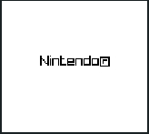
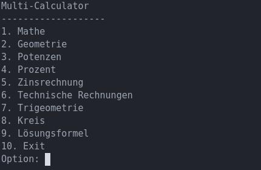
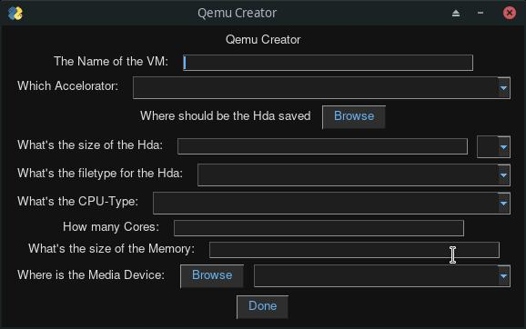
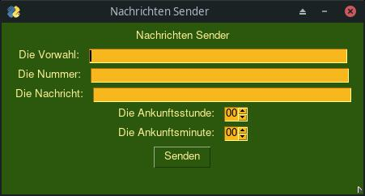

-

Ein Gameboy Emulator in C
-

Ein Fork von CS-NDS-Server
-

Mein Multi-Calculator
-

QEmui
-

PyNachricht-SenderGUI
-

Ein Gameboy Emulator in C -
Ein Fork von CS-NDS-Server -

Mein Multi-Calculator -

QEmui -

PyNachricht-SenderGUI